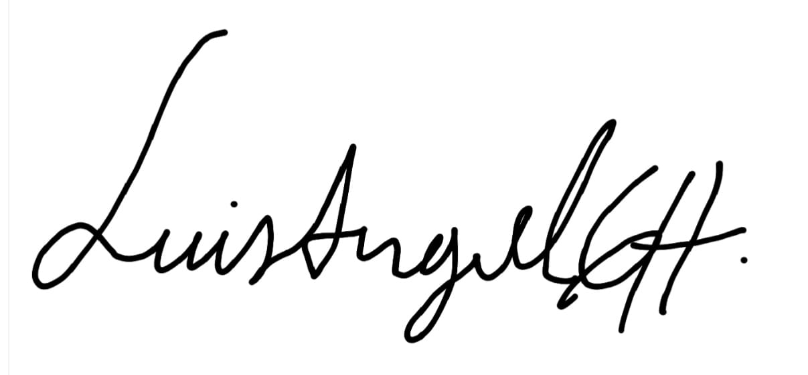

4106 Stone Way N, Seattle WA
laghoyos@uw.edu
+1 206-730-9007
Floyd | Snider
Two Union Square
601 Union Street, Suite 600
Seattle, WA 98101
Dears,
I am writing to express my interest in the GIS Analyst position. With a strong background in geospatial data analysis, InSAR technology, and civil engineering, as well as hands-on experience using remote sensing and geospatial tools, I am excited about the opportunity to contribute to your team. My academic journey and professional experiences have equipped me with the technical skills and analytical mindset needed to excel in this role.
I am currently pursuing a Master’s degree in Civil Engineering at the University of Washington, where I have focused on geospatial data analysis, remote sensing, and engineering computing. I have worked extensively with tools such as Python and GIS software (QGIS and ArcGIS) to model and analyze complex datasets. My thesis, which involves the calibration of physics-based models for earthquake-induced landslide hazards, further demonstrates my ability to apply geospatial data to solve real-world challenges.
I am drawn to Floyd | Snider because of your innovative approach to geospatial technology and the opportunity to work alongside a talented team on cutting-edge projects. I am confident that my technical proficiency, combined with my passion for geospatial engineering, aligns with your company’s goals and vision. I would be thrilled to contribute to the continued success of Floyd | Snider and bring my problem-solving skills to your team.
Thank you for considering my application. I am excited about the possibility of discussing how my skills and experiences align with your needs in more detail. I am available at your convenience for an interview and can be reached at +12067309007 or laghoyos@uw.edu.
Sincerely,
